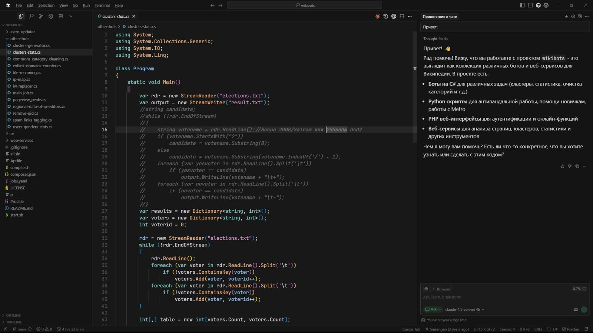

Cursor inclui o GLM 5.3, modelo aberto da chinesa Z.ai, no seletor de modelos
Opção com 1 milhão de tokens de contexto chegou sem anúncio formal; análise vê modelos abertos baratos pressionando os apps de IA.

O Cursor, editor de código com agentes de IA comprado pela SpaceX, passou a oferecer nesta semana o GLM 5.3, modelo de pesos abertos da chinesa Z.ai (Zhipu), em seu seletor de modelos. Segundo o The Inference, a inclusão veio sem anúncio: apenas uma página de documentação e uma linha nas configurações.
A documentação do Cursor descreve o GLM 5.3 como sucessor do GLM 5.2, com janela de contexto de 1 milhão de tokens e três níveis de raciocínio (Low, High e Max, com High como padrão). Ele é ativado em Settings > Models, tem acesso às ferramentas do agente e consome o pool de uso “Other Models”, com o mesmo preço por token do GLM 5.2. Há ainda uma versão mais rápida e barata, o GLM 5.3 Flash.
O The Inference informa preço de US$ 1,40 por milhão de tokens de entrada e US$ 4,40 por milhão de saída. A publicação lembra que, em agosto, um desenvolvedor da Z.ai disse ter apontado uma vulnerabilidade potencialmente séria no próprio Cursor.
Na leitura do site, modelos abertos baratos estão criando um piso de preço para a inteligência aplicada à programação, o que pressiona empresas que revendem acesso a modelos de fronteira.